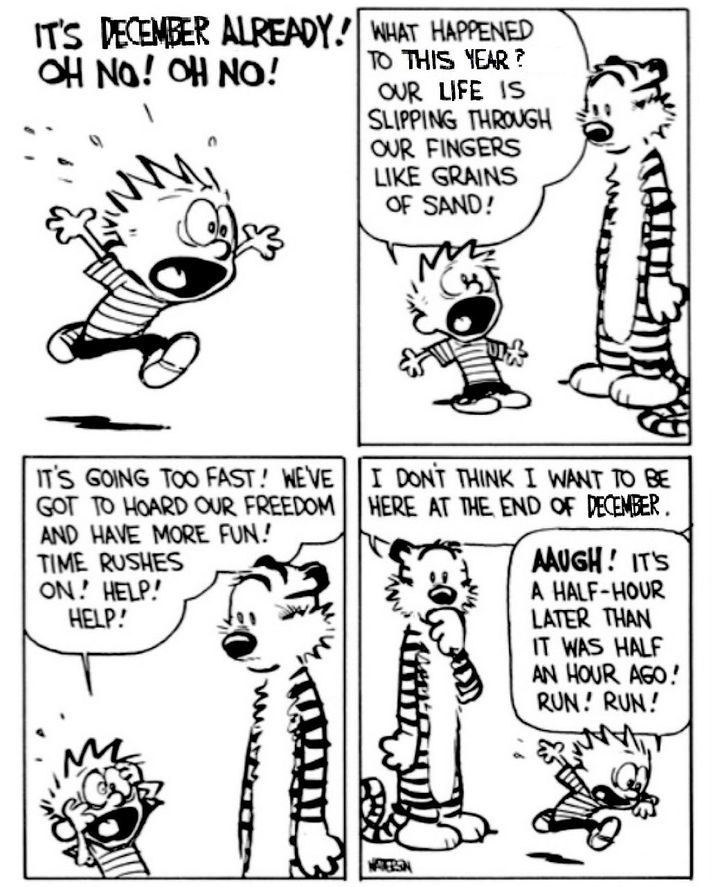

Hey.
My name is Varun Desai.
I am very passionate about computers and enjoy a lot working with low level systems. I could bore you more
with details about my professional experience, but for that you can just have a look at my resume (must
be linked somewhere on this website). This website is largely unmaintained, if you're actually reading this
I'm surprised.
The image above is AI generated. In the foreground is the Golden Gate bridge, in San Francisco. I like sunsets.
Here is comic strip that has been on this website for a while now. Life goes on quite fast.
You can find my CV here.
